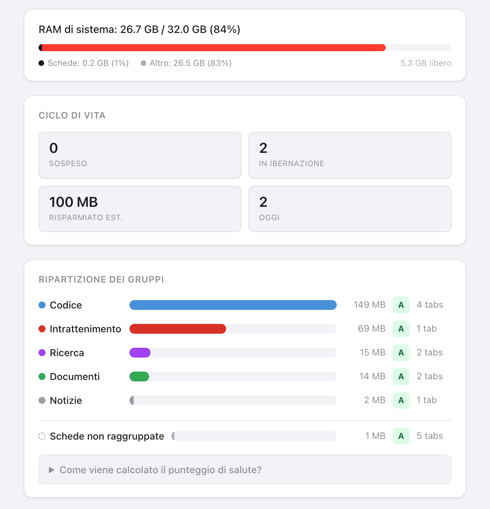
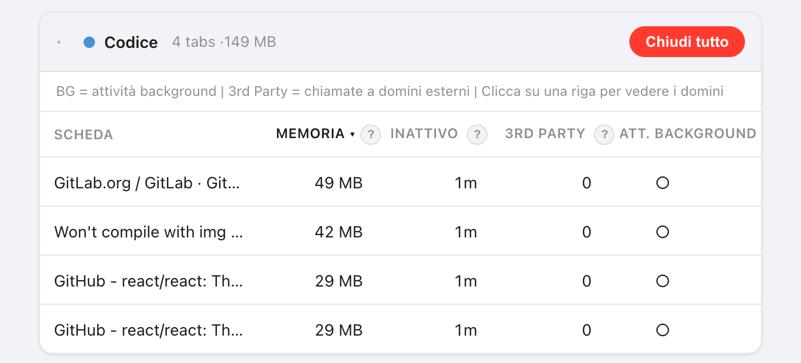
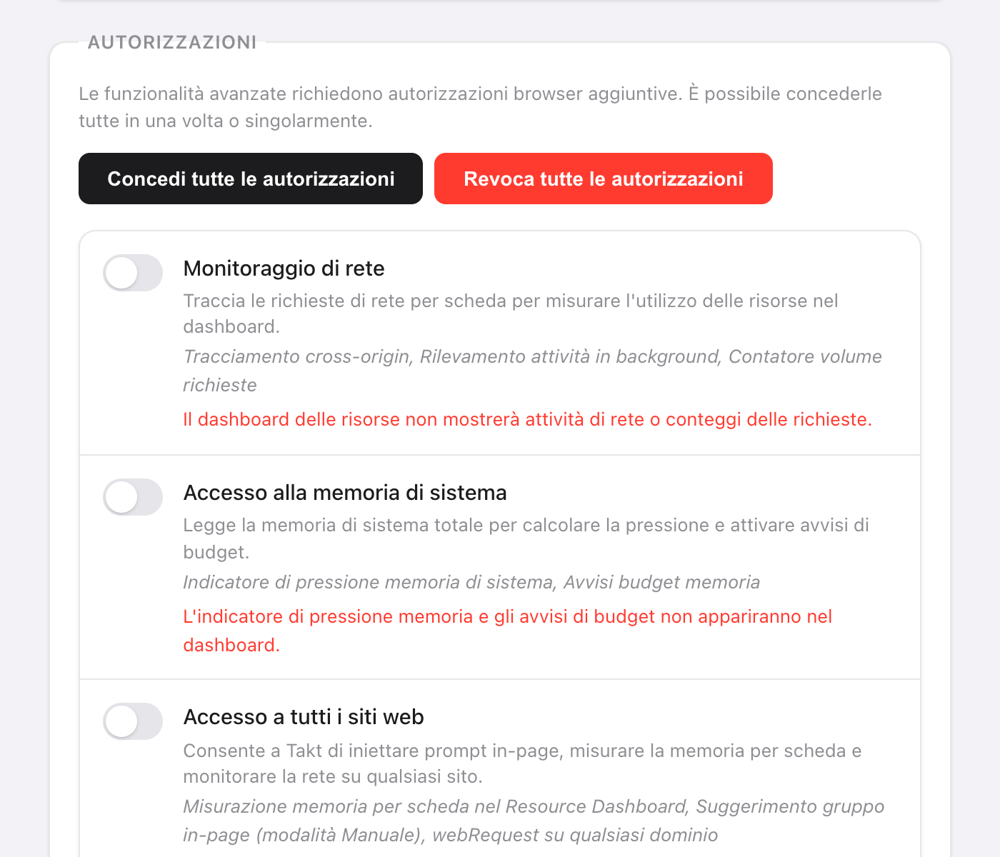

In breve: apri Opzioni → Dashboard di Takt. I gruppi sono in ordine di memoria stimata e le schede di ogni gruppo sono ordinate dalla più pesante.
- Stima della memoria per scheda, tempo di inattività, domini di terze parti e attività in background.
- Punteggio di salute da A a F per gruppo di schede, una barra della memoria di sistema e budget di memoria che scaricano le schede al posto tuo.
- Premium ($3/mese o $30/anno). Misurato nel tuo browser, da niente al di fuori.
Perché è difficile capire quale scheda usa memoria?
Chrome mostra la memoria nella scheda di anteprima che compare passando il mouse su una scheda, una alla volta. Con 30 schede aperte sono 30 passaggi del mouse, e nessun totale.
Di solito, comunque, non ti interessa una singola scheda. Ti interessa sapere se il gruppo da chiudere è "Research" o "Entertainment". Per questo Takt somma la memoria per gruppo di schede.

Come stima Takt la memoria di una scheda?
Takt esegue un breve script dentro ogni scheda e somma quattro parti:
| Parte | Come viene misurata |
|---|---|
| Heap JavaScript | Heap in uso, come Chrome lo comunica alla pagina |
| Albero DOM | Numero di elementi × circa 1,5 KB |
| Risorse caricate | Dimensione decodificata di ogni file caricato dalla pagina |
| Buffer canvas | Larghezza × altezza × 4 byte per ogni canvas |
Considera il risultato una classifica, non una fattura. Non include il carico del browser per ogni scheda, quindi il dato di Chrome per la stessa scheda può essere diverso.
Alcune schede non si possono misurare. Le schede sospese non hanno niente in esecuzione. Le pagine di Chrome (chrome://), le pagine delle estensioni e il Chrome Web Store non consentono script, quindi compaiono in Schede non monitorate. Se una scheda non risponde entro 3 secondi, Takt mostra l'ultimo valore noto.

Cosa significano i punteggi di salute da A a F?
Ogni gruppo parte da 100 punti e ne perde in base a quattro fattori:
| Fattore | Condizione | Penalità |
|---|---|---|
| Memoria (totale del gruppo) | Oltre 500 MB / oltre 200 MB | −30 / −15 |
| Tempo medio di inattività | Oltre 60 min / oltre 30 min | −20 / −10 |
| Schede con attività in background | Più di 3 / almeno 1 | −20 / −10 |
| Domini di terze parti | Oltre 50 / oltre 20 | −15 / −5 |
Voti: A da 90 in su, B da 75 a 89, C da 60 a 74, D da 40 a 59, F sotto 40. Un gruppo che usa 300 MB con schede inattive in media da 45 minuti ottiene 75: una B.
"Attività in background" significa che la scheda ha completato una richiesta di rete negli ultimi 60 secondi. "Terze parti" indica qualsiasi dominio diverso dal sito della scheda e dai suoi sottodomini. Le CDN più comuni sono contate a parte, così non gonfiano il punteggio.
Cosa faccio una volta trovate le schede pesanti?
- Consigli di sospensione. Takt elenca 5 schede da scaricare, ordinate per memoria e tempo di inattività, con un peso maggiore per l'attività in background. Esclude la scheda attiva, le schede fissate e una scheda che è da sola nel suo gruppo. Fai clic su Sospendi per scaricarne una.
- Chiudi tutto nel riquadro di un gruppo chiude quel gruppo.
- Iberna una scheda che vuoi riavere più tardi. Vedi come funziona l'ibernazione.
Posso limitare la memoria usata da un gruppo di schede?
Sì. In Settings → Memory Budgets, inserisci il nome di un gruppo e un limite in MB. Takt controlla i budget ogni 15 secondi.
Quando un gruppo lo supera, ricevi una notifica con il gruppo, il suo consumo, il suo budget e "Suspending tabs in 10s — click to cancel" (sospensione delle schede tra 10 s, fai clic per annullare). Se la ignori, Takt scarica le schede più pesanti di quel gruppo finché non torna sotto il budget. Non tocca mai la scheda attiva, le schede fissate o quelle che riproducono audio. Fai clic sulla notifica per annullare.
I budget si basano sulle stesse stime, quindi anche loro richiedono Accesso a tutti i siti web.
Di quali autorizzazioni ha bisogno la dashboard?
Nessuna all'installazione. Concedi ciascuna in Settings → Autorizzazioni e puoi revocarla lì in qualsiasi momento.
| Autorizzazione | Cosa aggiunge | Senza |
|---|---|---|
| Accesso a tutti i siti web | Stime di memoria per scheda | La memoria mostra "—" |
| Monitoraggio di rete | Domini di terze parti e attività in background (serve anche Accesso a tutti i siti web) | Nessuna colonna di rete |
| Accesso alla memoria di sistema | La barra della RAM di sistema | "Memoria di sistema non disponibile" |
Il monitoraggio di rete vede solo le richieste fatte dopo che l'hai concesso. Ricarica le schede aperte per iniziare il conteggio. Takt legge indirizzi e tempi delle richieste, non il contenuto delle pagine.

Cosa la dashboard non può dirti
Stima la memoria delle pagine. Non legge l'elenco dei processi di Chrome, quindi non vede la memoria della GPU, le estensioni o il browser stesso. Se la barra di sistema mette gran parte della RAM sotto "Altro", quella memoria va ad altre app o a Chrome stesso, non a ciò che contengono le tue pagine.
Trova il gruppo che si mangia la RAM. Poi mettilo a dormire.
Aggiungi Takt a ChromeDomande frequenti
Come stima Takt la memoria di una scheda?
Somma l'heap JavaScript in uso, il numero di elementi × circa 1,5 KB, la dimensione decodificata delle risorse caricate e i buffer canvas a larghezza × altezza × 4 byte. Usala per mettere in ordine le schede.
Perché la colonna Memoria mostra un trattino?
Accesso a tutti i siti web non è concesso, la scheda è sospesa, oppure è una pagina su cui le estensioni non possono eseguire script, come le pagine chrome://.
La Dashboard risorse è gratuita?
No. La dashboard e i budget di memoria sono Premium, a $3/mese o $30/anno.
Takt invia i dati delle mie schede da qualche parte per misurarli?
No. Ogni misurazione avviene dentro il browser. Vedi come Takt tiene i dati in locale.